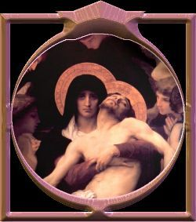
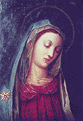

 Vivemos num tempo conturbado pela falta de amor
e por uma
Vivemos num tempo conturbado pela falta de amor
e por uma
Após o Concílio Vaticano II, realizado entre 1962 e 1965, houve uma impressão de que a humanidade mudaria de atitude em relação às coisas de DEUS. Na verdade, embora pequeno, tivemos um período em que o mundo parecia viver em euforia, com manifestações que revelavam respeito entre as pessoas, principalmente entre os cristãos, mostrando alegre disposição de viver, de trabalhar, inclusive com um contagiante entusiasmo quando participavam das celebrações eucarísticas, deixando transparecer um bem dimensionado espírito de fraternidade, que acolhia os ensinamentos divinos com obediência e seriedade.
Todavia, os sinais de divergência na Igreja que já pairavam timidamente no espaço, foram crescendo, ganharam comprimento, altura e largura, fazendo surgir palavras como: “Conservadores”, “Progressistas”, “Tradicionalistas” e outras, que indicavam a radicalização de opiniões opostas, cuja intransigência de seus adeptos, concretizou a divisão que destruiu de vez, aquela aparente harmonia.
A reforma litúrgica, considerada como uma notável conquista do Concílio, pois entre outras providências, conseguiu eliminar as barreiras que existiam entre o clero celebrante e a assembléia leiga, deu origem a interpretações estranhas, possibilitando a um grande número de pessoas enveredar por caminhos tortuosos e difíceis. Sem qualquer constrangimento, realizaram-se cerimônias verdadeiramente bizarras, dizendo-se no “espírito do Concílio”; implantou-se o costume de celebrar a Santa Missa fora da Igreja, "sem a real necessidade"; o ecumenismo que devia ser exercitado com seriedade e equilíbrio, foi cultivado de maneira errônea e lastimável: para satisfazer e cativar pessoas de outras confissões de fé (outras religiões), chegaram ao absurdo de colocar NOSSA SENHORA num plano de esquecimento e remover imagens de Santos, dos altares.
Em consequência desse procedimento absurdo, ocorreu uma
sensível
Por outro lado, ainda resultante da incorreta interpretação dos Documentos Conciliares, aliado a um “desejo reprimido” de maior liberdade por parte de muitas pessoas, padres abandonaram o sacerdócio e religiosas esvaziaram os Conventos. Entrou em declínio as vocações e muitos Mosteiros e Seminários foram fechados.
Na sequência dos anos, embora tenha ocorrido uma reação enérgica em diversas Instituições religiosas, que procuraram imprimir mais ordem e rigor no cumprimento das Regras e Estatutos, conseguindo deste modo resgatar um pouco das Tradições Cristãs e do sentido do sagrado, entretanto, de um modo geral, não foram alcançados os resultados almejados, porque uma grande maioria de religiosos, tinham secularizado os seus hábitos (passaram a se preocupar com a renda mensal, com o aparelho de TV, com o automóvel, etc.).
A sublevação dos costumes atingiu também os leigos, primordialmente os que tinham conhecimentos com raízes pouco profundas e aqueles que nada conheciam sobre a doutrina cristã. Diante dos acontecimentos ficaram com a “crença” abalada e muitos, buscaram outras religiões ou seitas, onde pretendiam exercitar a sua espiritualidade. Então o mundo estarrecido presenciou a criação e proliferação de uma quantidade incalculável de "seitas e de religiões."
Todavia, numa observação mesmo superficial sobre as doutrinas das "novas seitas" , pode-se ver que todas elas oferecem a salvação, mas não trilham aquele mesmo caminho difícil de renúncias, de dedicação, de amor fraterno e sofrimentos, que perseverantemente o SALVADOR atravessou, no qual ELE deixou os seus ensinamentos, as suas leis e a grandeza de um amor eterno, como exemplo admirável para ser seguido por todos. A estrada das "novas seitas e religiões", é um caminho fácil, ajustado a comodidade e ao interesse dos fundadores e frequentadores.
O desenvolvimento destes fatos aconteceu acompanhado por uma onda de “modernismo” e de um famigerado “racionalismo”, que queria explicar a fé em DEUS como se fosse uma manifestação cientifica e não como é na realidade, uma manifestação espiritual. Seus sectários, além de quererem formular novas leis da moral, pregavam o exercício de um abominável “naturalismo”, que entre outras coisas desagradáveis, criou uma "atmosfera de permissividade", que maldosamente confundiu o raciocínio de muita gente e favoreceu a uma "liberdade escandalosa" para ambos os sexos.
Estas mudanças atuaram
decisivamente sobre a humanidade no final do século XX e princípio do século XXI,
gerando um execrável relaxamento moral e espiritual, manifestado pelo comodismo,
pela indolência, frieza e uma cruel indiferença, que produziu um maciço
afastamento do CRIADOR, abrindo um profundo abismo na espiritualidade das
pessoas e na formação das famílias, onde a falta de obediência e a
ausência de pudor, destruiu de modo lamentável a moral, ocasionando
uma impressionante e estarrecedora decadência na humanidade.

O século XX, considerado aquele de notáveis
realizações e admiráveis conquistas tecnológicas, consegue ostentar também o
detestável título de “século da Grande
Apostasia”, em face da terrível degradação dos costumes
e da perda de fé, que mergulhou a humanidade num perverso caos
espiritual.
Esta realidade, como veremos, faz parte do conteúdo das Revelações Divinas feitas em Fátima. NOSSA SENHORA em 1917, com muita antecedência, preveniu a humanidade o que poderia acontecer, se as pessoas não procurassem estabelecer uma sincera relação de amizade com o CRIADOR e continuassem vivendo distante de DEUS.